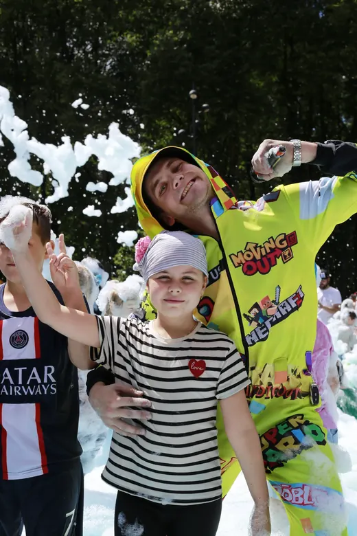
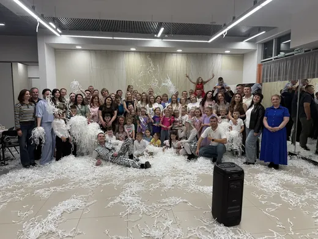
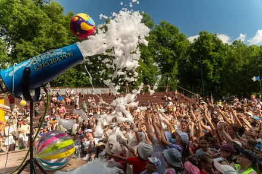
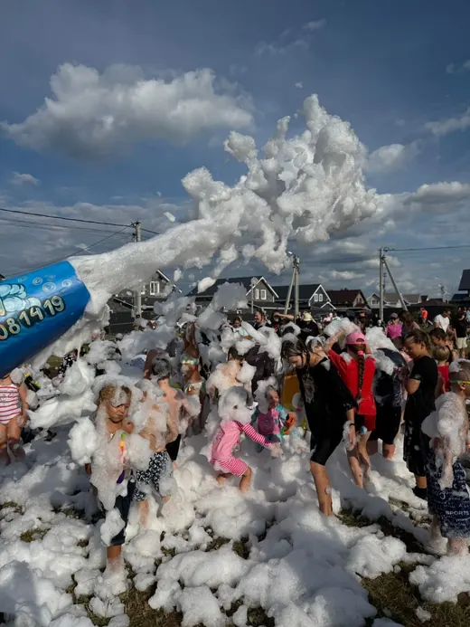
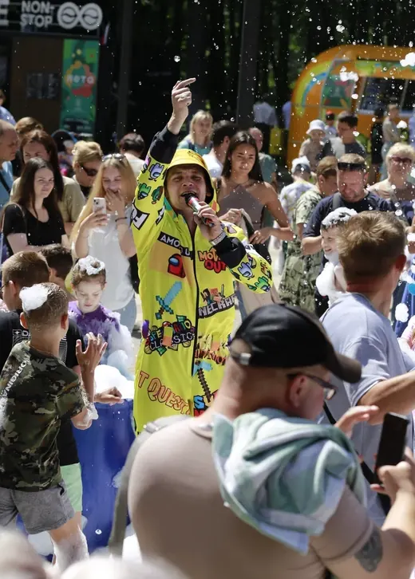

300 литров пенного раствора и тюнингованная пушка в виде акулы — фирменная деталь студии. Пушка запускается дистанционно, поэтому ведущий не стоит при ней, а играет с детьми: второй аниматор не нужен, и это сразу минус одна позиция в смете.







Раствор гипоаллергенный, на основе детского шампуня, без запаха. В глаза попадать всё равно неприятно, поэтому ведущий предупреждает детей и держит рядом чистую воду.
Нет. Раствор биоразлагаемый, после полива из шланга следов не остаётся. На плитке пена сходит быстрее, чем на траве.
Пенную ставим от +22 °C и без ветра. Если погода испортилась, переносим на другую дату или меняем на крио-шоу и дискотеку — предоплату при этом не теряете.

Ведущий работает с жидким азотом при температуре −196 °C: облако дыма стелется по земле, из бутыли поднимается вулкан выше человеческого роста.
15 000 ₽
Формат для тех, кому аниматор в костюме уже мал.
15 000 ₽
Полчаса, за которые ведущий успевает показать пузыри всех размеров — от тех, что снимаются с двух пальцев, до купола, куда целиком помещается ребёнок.
7 000 ₽ · 30 минутНапишите, какой праздник и когда — Андрей ответит и скажет, свободно ли время. Отвечает в день обращения.